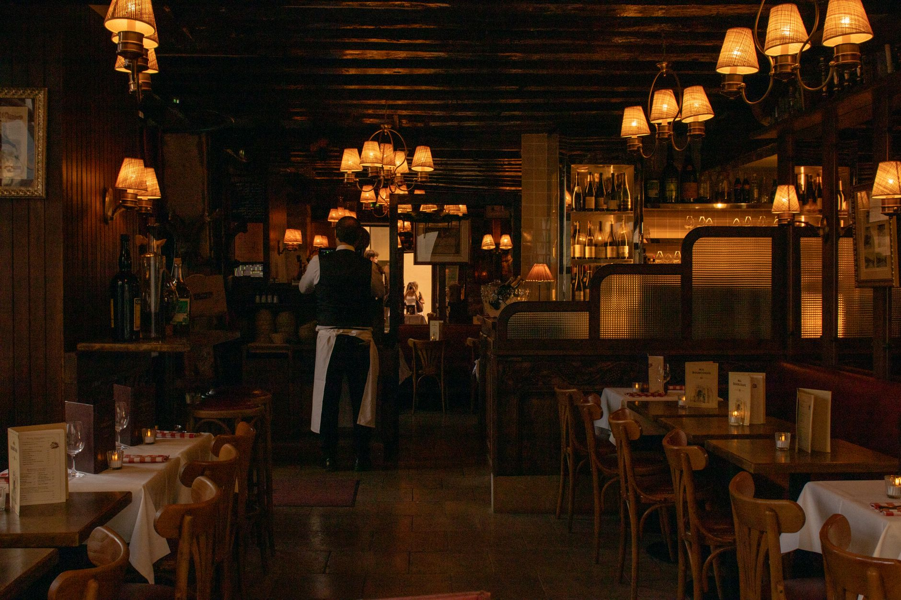
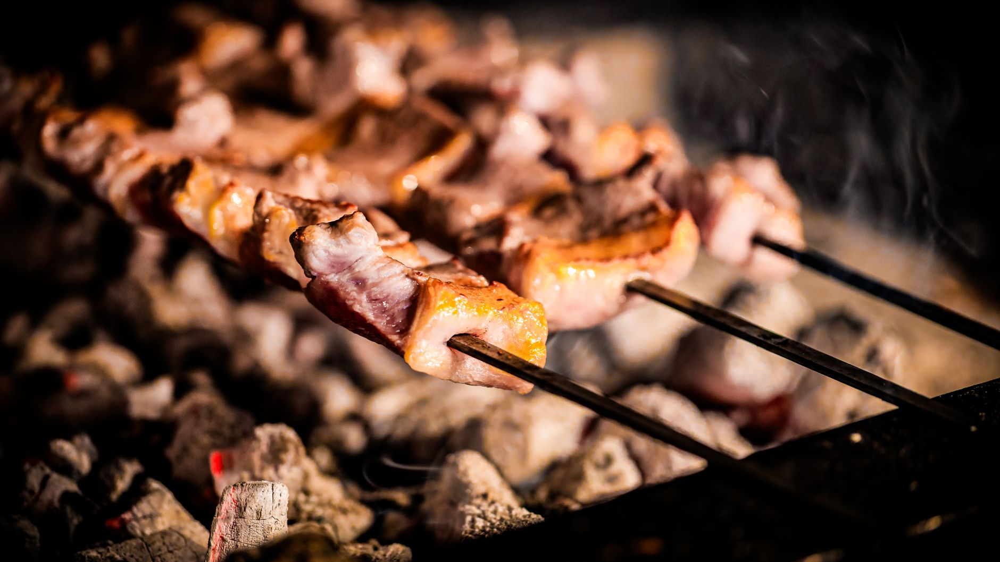

Two kitchens, one dining room
A Persian charcoal grill and an Italian pasta bench, both cooking every night in Kentish Town. You sit in the middle and order from whichever one you fancy. Usually both.

How it works
Nima cooks the Persian side: saffron, charcoal, rice with a lid on it for an hour. Maryam — everyone calls her Nonna, and she has stopped correcting them — cooks the Italian side: dough, slow pans, one good tomato at a time. They share a pass, a walk-in fridge and an argument about salt. They do not share recipes.
The two menus stay separate on the page, and separate in the pot. Tables order across both and pass the plates around, which is the entire point. Nobody will tell you that lamb koobideh and tagliatelle don't belong on the same table; they belong on ours every night.
There is a small handful of dishes that genuinely came out of the two kitchens leaning over each other — barberries in a brown butter sauce, that sort of thing. Those exist because they tasted better, not because they made a good story. Everything else is cooked the way it has always been cooked.
-
Two menus, side by side
One page, one fold down the middle. Persian on the left, Italian on the right. Order from either, in any order you like.
-
Plates go to the middle
Nothing here is precious about portions. Ask for extra forks and we'll bring them before you finish asking.
-
No fusion for the sake of it
Three or four crossover dishes, earned over a year of staff dinners. The rest stay exactly where they came from.
Tonight's handful
Five plates we'd put in front of a friend who'd never been. Two from Nima, two from Nonna, and one that belongs to both of them.

-
Lamb koobideh
Shoulder and a little tail fat, minced twice, pressed onto flat skewers and cooked fast over charcoal. Grilled tomato, sumac, warm flatbread underneath catching the juice.
-
Fesenjān
Walnuts ground and cooked down with pomegranate molasses for three hours until it turns dark and sour-sweet. Chicken thigh, saffron rice, a wedge of tahdig for whoever is quickest.
-
Tagliatelle al ragù
Egg pasta rolled each morning, cut wide. The ragù is beef shin and pork, milk, and five hours on the lowest flame we can hold. Parmesan at the table, not before.
-
Grilled bream, salmoriglio
Whole bream over the same charcoal the skewers use, dressed with oregano, lemon and oil while it's still spitting. Boiled potatoes, and that is all it needs.
-
Barberry and brown butter agnolotti
The one dish that earned its place. Ricotta and herb filling, butter cooked to hazelnut, a scatter of sharp barberries. Nonna resisted for six months.
Where and when
We're a five-minute walk from Kentish Town station, on the eastern side of Fortess Road. The dark blue front with the lamp over the door.
- Tuesday to Thursday
- 6pm – 11pm
- Friday and Saturday
- 12pm – 3pm, 5.30pm – 11.30pm
- Sunday
- 12pm – 8pm, one long service
- Monday
- Closed — both kitchens go to the market
- Walk-ins
- Always welcome after 9pm at the bar and the two window tables
- Address
- 42 Fortess Road, Kentish Town, London NW5 2HB
- Phone
- +44 20 7946 0813
- hello@nimaandnonna.co.uk
What people say
We came for the pasta and left arguing about whose rice it was. Four of us, eleven plates, no regrets. The tahdig arrived at the table and the conversation simply stopped.
Priya R., Tufnell Park
Come and eat
Book online and pick your table, or ring us — someone in the dining room will pick up between five and close, and they'll tell you honestly whether it's worth chancing a walk-in.